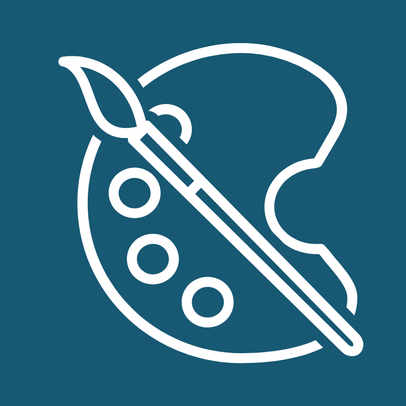
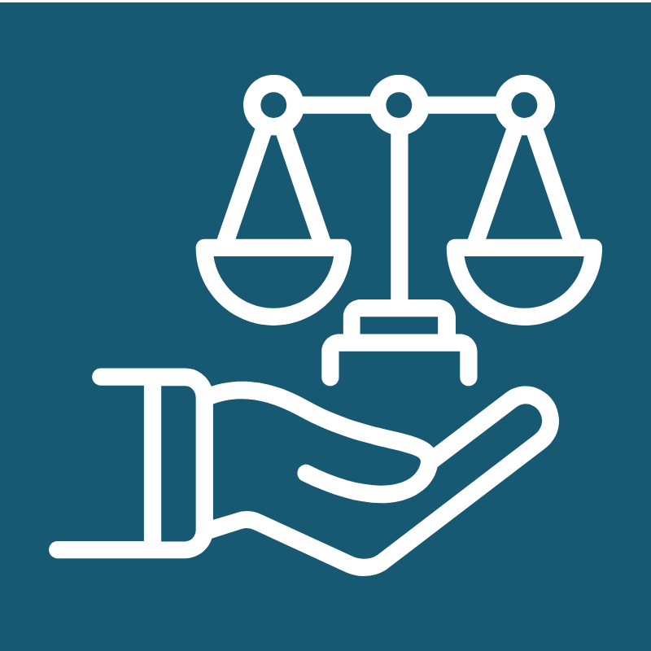

WP3 Home Page
A style guide for an innovating tech communities
website
The Connected Communities Initiative aims to empower
communities and increase their social cohesion and
feelings of belonging.
Site Map
The Site Map presents the overall structure and hierarchy of the website, ensuring
intuitive navigation, logical grouping, and accessibility for all users.
Explore

Style Guide
The Style Guide defines the visual and interaction design rules for the site, ensuring visual
consistency and alignment with the CCI brand identity.
Explore

Ethical Response
The Ethical Response page analyses the client’s subscription plug-in request through
the lens of the ACS Code of Professional Ethics, offering balanced recommendations.
Explore
Gen AI Acknowledgement
The Gen AI Acknowledgement page documents how generative AI tools were used responsibly
during the design process, demonstrating alignment with
UQ’s Responsible AI Framework.
Explore